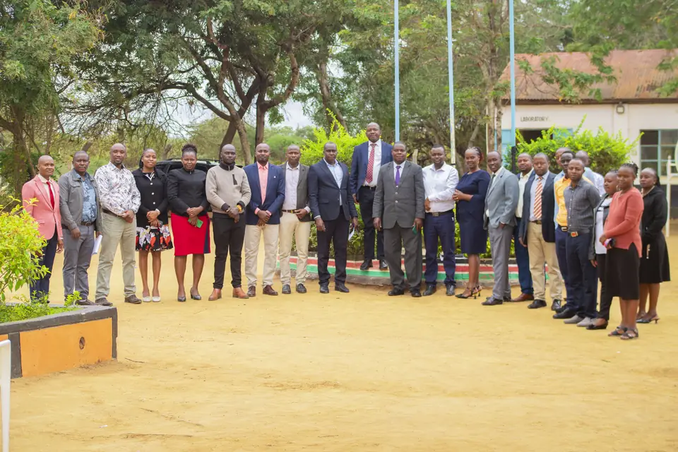
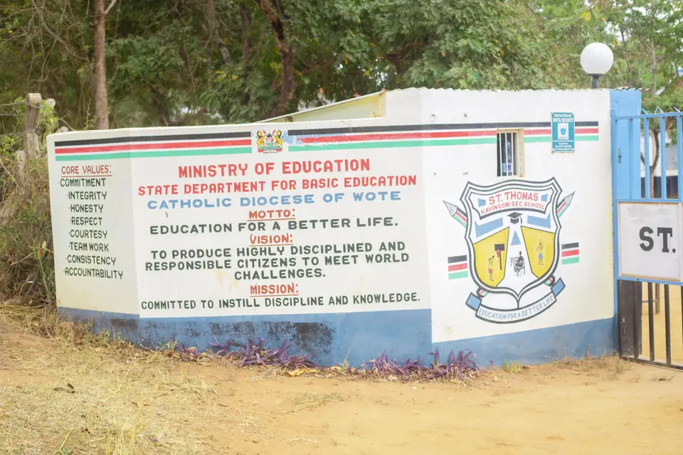

Kathonzweni, Makueni County
Welcome to St. Thomas Kavingoni
St. Thomas Kavingoni Senior School nurtures disciplined, creative and confident learners through academic excellence, innovation, and strong moral values since 1983.
600+Students
10+Departments
6.5Mean Grade 2025
7.2Target 2026
10+Clubs & Activities
Explore our school
Learning, Growing and Belonging
Find out how we teach, what our learners do beyond the classroom, and how to reach us.

Academics
Learning Pathways & Departments
CBC and 8-4-4 programmes, nine departments and a committed teaching team.
Explore academics →School Life
Clubs, Sports & Culture
Over ten clubs and activities, the latest school news and our events calendar.
See school life →
Admissions
Visit or Get in Touch
Call, email or send us a message for admissions and general enquiries.
Contact the school →